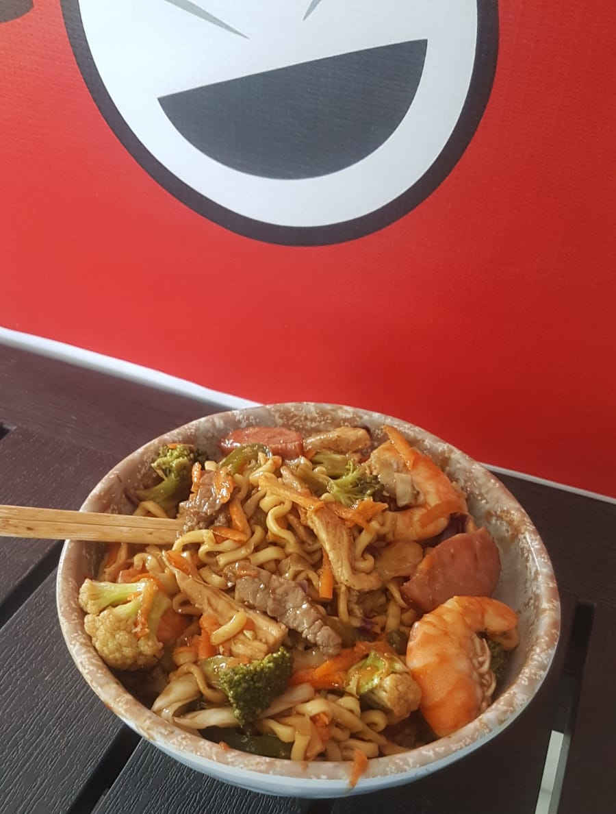

Inserir imagens em HTML é muito simples,
na página, como lá em cima no Icone de favoritos.
Podemos carregar as imagens da mesma pagina Index, como mostra abaixo
Podemos carregar imagens dentro de pastas do projeto, como mostrado logo abaixo.
Da pra carregar imagens de outra pagina, de sites externos.